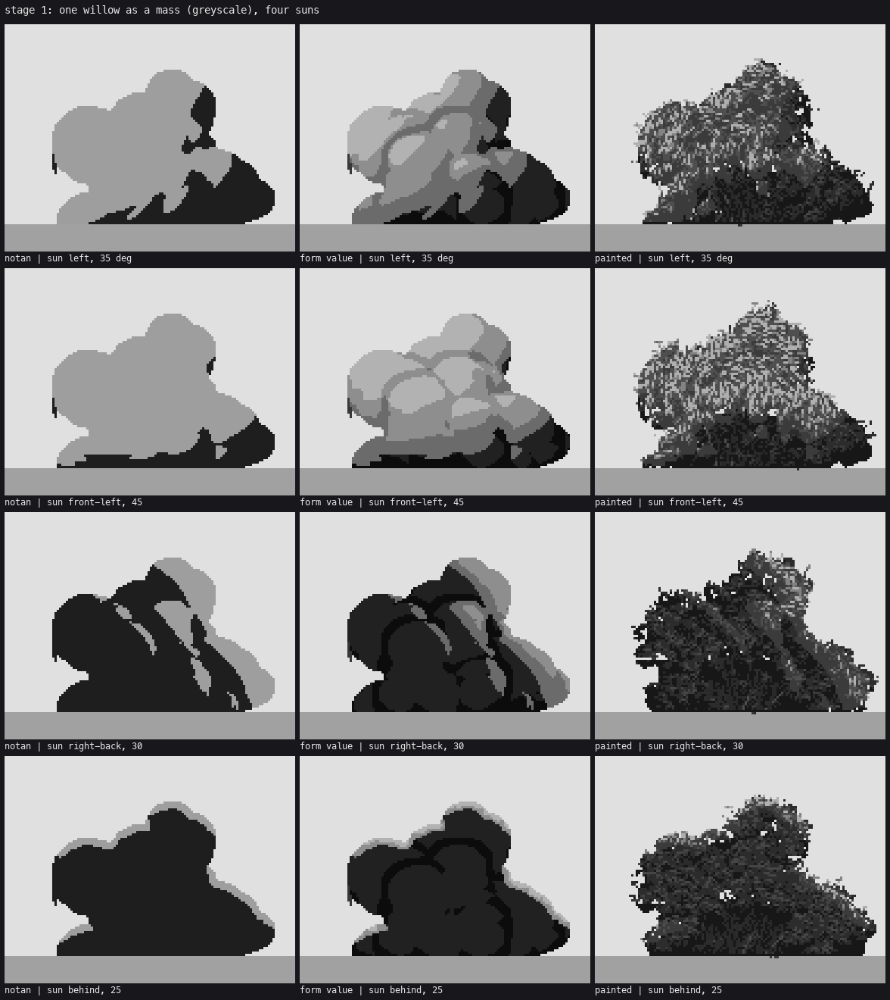

3. The willow's form
Back to the tutorial. Code: WillowBush, Bush.fields, wand_dirs in code/bush.py; draw_stems and the hollow in paint_willow, code/willow.py.
A shrub willow is a fan of upright stems (wands) from a root crown, each arching out and drooping at the tip, with narrow leaves along the outer part. Its outline is the sum of the wand tips; it's darker and see-through at the base where only stems stand.

The single NZ willow I painted against, box-downsampled to painting size.
Wands
Build 20–30 wands as cubic Béziers in 3-D. Group them into 4–7 clumps that share a tilt and azimuth (the sub-domes of the crown). Splayed wands reach further and droop more; upright ones stay tall:
# bush.py, WillowBush.__init__
ci = i % K # which clump this wand belongs to
tilt = np.clip(cl[ci][0] + np.radians(rng.normal(0, clump_sd[0])), 0.03, np.radians(spread) * 1.05)
az = cl[ci][1] + rng.normal(0, clump_sd[1])
base = np.array([cx + rng.uniform(-1, 1) * crown_w * W / 2, gy, rng.uniform(-1, 1) * crown_w * W / 4])
f = tilt / np.radians(spread) # 0 upright .. 1 splayed
reach = (W / 2) * (0.25 + 0.75 * f) * rng.uniform(0.75, 1.0)
height = H * (1.0 - 0.45 * (1 - self.top_flat) * f ** 2) * rng.uniform(0.8 - 0.25 * self.top_flat, 1.0)
P = [np.array([0.0, 0.0]), np.array([self.diverge * reach, 0.75 * height]),
np.array([0.65 * reach, 1.08 * height * (1 - 0.25 * f)]),
np.array([reach, height * (1 - droop * 0.3) * (1 - 0.8 * f ** 1.3)])]
The last control point is what makes the outermost wands droop almost to the gravel. Without it the crown juts out over bare ground like a ledge (see how-to 8).
Leaf lobes (little spheres) ride the outer 88% of each wand, spaced by their own size. wand_dirs gives every pixel the direction of the wand under it, which the clumps and marks follow.

The raw value field of four seeds.
Three scales of surface
Lighting only the lobes gave me a pile of balls; lighting only a dome gave me a potato. The normal is a mix of three:
- an egg fitted to the whole mass (the big form: lit top, underside turning away), weight 0.7;
- a smoothed dome per wand clump (
clump_mix=0.35), so the sub-domes turn; - each lobe's own sphere, blurred by 2% of the bush width, for the rest.
Then the atelier value plan: lit family steps 3–5.4, shadow family 0–2.45, a hard jump at the terminator (term=0.10).
Lobe caps break the terminator
A straight terminator across a leafy mass reads as a cut. Let a lobe whose own top faces the sun keep a lit cap a little past the big terminator:
nz0 = np.sqrt(np.clip(1 - nx0 ** 2 - ny0 ** 2, 0, 1))
dl = nx0 * L[0] + ny0 * L[1] + nz0 * L[2] # the lobe's own light
cap = (dl > self.cap_t) & (d > term - self.cap_reach) & mask & (ao < 0.5)
d = np.where(cap & (d <= term), term + 0.02 + 0.3 * (dl - self.cap_t), d)
Now the family boundary follows lobes, as it does in the photo.

Stage 1: notan, form value, painted, under four suns.
Don't march shadows on a lobe heightfield
My first bush ray-marched self-shadow across the lobe heights. Every lobe edge is a cliff in that heightfield, so the shadows came out as black polygons with straight edges ("a crack in a rock"). The egg plus lobe caps gives better form shadows with none of that.

The hollow and the stems
Near the bottom centre, thin the clumps with noise (not a clean arch, which reads as a bridge, and not full columns, which read as a box). Fill what's left with the near-black of the bush's far side in shade, and draw stems over it:
# willow.py
low = (yy - (gy - sp["visible_below"] * H_)) / (sp["visible_below"] * H_)
cen = 1 - np.clip(np.abs(xx - cx) / (W_ * 0.38), 0, 1)
see = np.clip(low, 0, 1) * cen * sp["see"]
zone = m & (see > sp.get("zone_t", 0.18))
mclump = m & ~(zone & (thin < 0.75)) # thin: smooth noise, 0..1
...
hol = zone & ~M
cv.mat[hol] = LEAFS; cv.step[hol] = (hn[hol] < 0.3).astype(int)
Stems (draw_stems) are each wand's lower 35–60%, drawn as clean runs through every fourth Bézier point. Only 55% of the wands show, broken where foliage crosses them, and almost all in the dark twig step. Only stems that lean toward the sun and stand in front get the lit step. All of them lit made a barcode:

The first stems: all visible, all lit.
A crown about a third of the bush wide, with wands diverging early (diverge=0.32), reads as a fan. A narrow crown reads as one trunk.
Still short
On some seeds the silhouette still lumps into one big head with an "ear" (the critic's teddy bear). Seed-to-seed variation (how-to 8) hides it in stands; a lone bush would want a check on the outline itself.